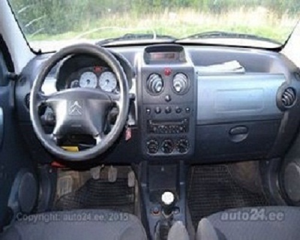
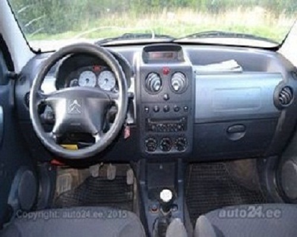

VitaLina+

 


Citroen Berlingo Multispace 1.6 66kW
Цена 2890 Euro
Тип: легковой автомобиль Тип кузова: объемный универсал Первичная рег: 04/2008 Двигатель: 1.6 (66 kW) Топливо: дизель Показ одометра: Ведущий мост: передний привод Коробка передач: механическая КП Цвет: бежевый
Оборудование
Оборудование безопасности
• усилитель руля • центральный замок (с пультом) • тормоза с АБС • 4x воздушная подушка • сигнализация (с датчиком наклона, с объемным датчиком) • иммобилайзер • доп.стоп сигнал • натяжители ремней безопасности спередиОборудование комфорта
• кондиционер • 2x электрические стеклоподъемники • электрические зеркала заднего вида (с подогревом) • круиз контроль • тонированные стекла • 1x противосолнечные козырьки с зеркаламиИнтерьер
• текстильная обивка • 2x обогрев сидений • складывающаяся спинка заднего сиденья • регулируемый руль (по высоте и глубине) • подлокотник спереди • коврики (резиновые)Аудио, видео, коммуникация
• стерео (CD, оригинальное, с пультом) • звуковые колонкиШины и диски
• летняя резина • зимняя резина (шипованные шины) • колпакиФары
• омыватели передних фар • противотуманные фонари (передние, задний) • регулятор положения фар по высотеДругое оборудование
• подогрев заднего стекла • крышка багажного отделения • очиститель заднего стекла • прицепное устройство (съемное) • Topelt võtmed ja puldid. Hooldusraamat.Технические данные
Кузов
количество мест: 5 количество дверей: 5 длина: 4137 мм ширина: 1724 мм высота: 1858 ммТопливо
топливо: дизель бак для топлива: 60 л расход топлива в городе: 6.6 л/100 км расход топлива на шоссе: 4.6 л/100 км расход топлива средний: 5.3 л/100 км Двигатель мощность: 66 кВт максимальная скорость: 160 км/ч объем: 1560 cm³ Массы, размеры пустая масса: 1315 кг полная масса: 1880 кг грузоподъемность: 565 кг прицеп с тормозами: 1100 кг прицеп без тормозов: 540 кг расстояние между осями: 2693 мм Оси количество осей: 2 Другая информация На учете в Эстонии, техосмотр до 09.2017 Купленный в стране: Эстония Местонахождение автомобиля: Tartu, Эстония